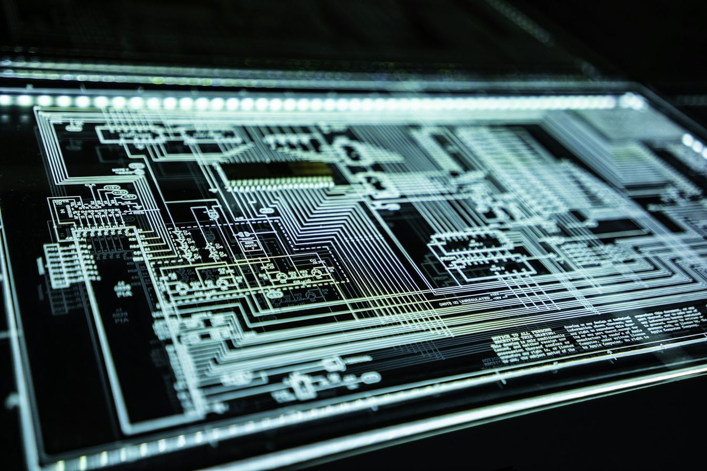
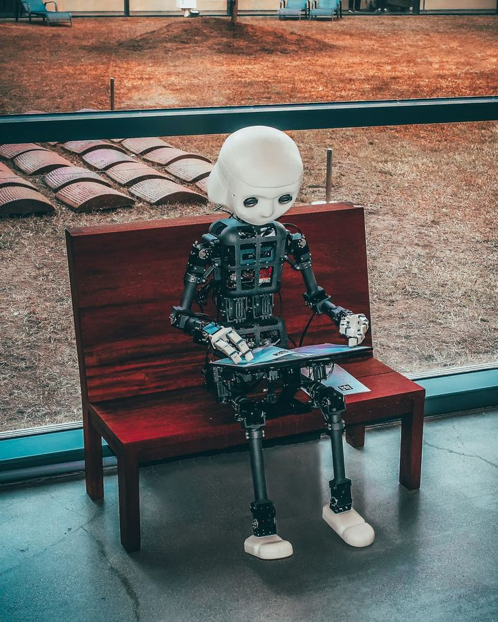
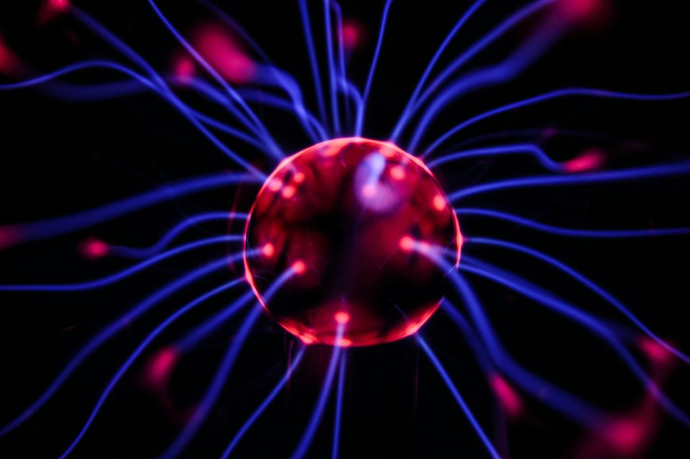
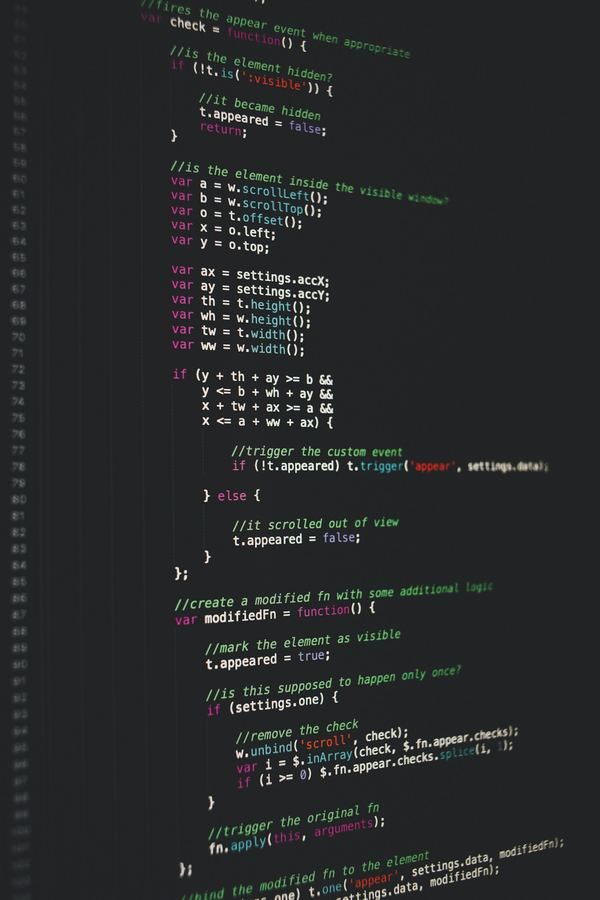
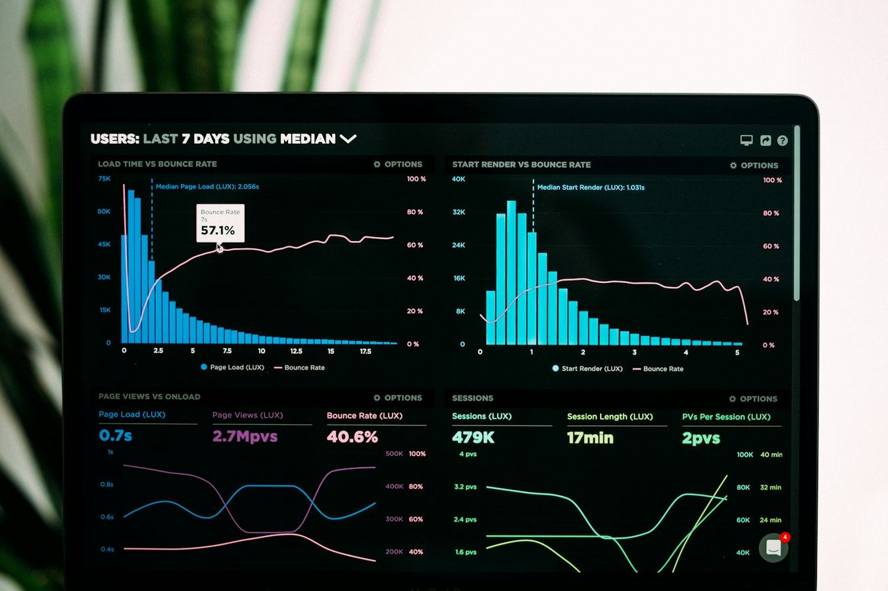
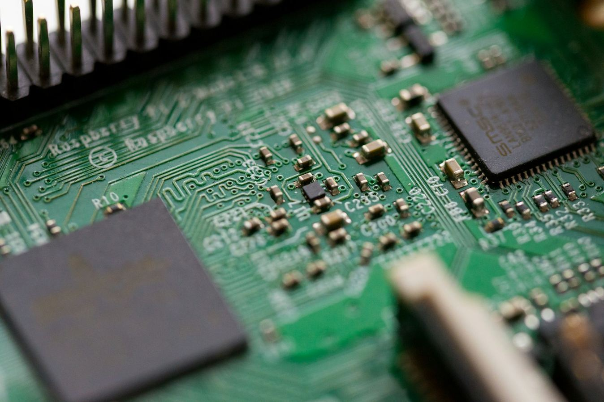
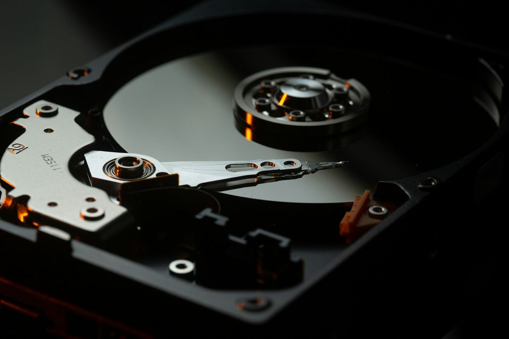
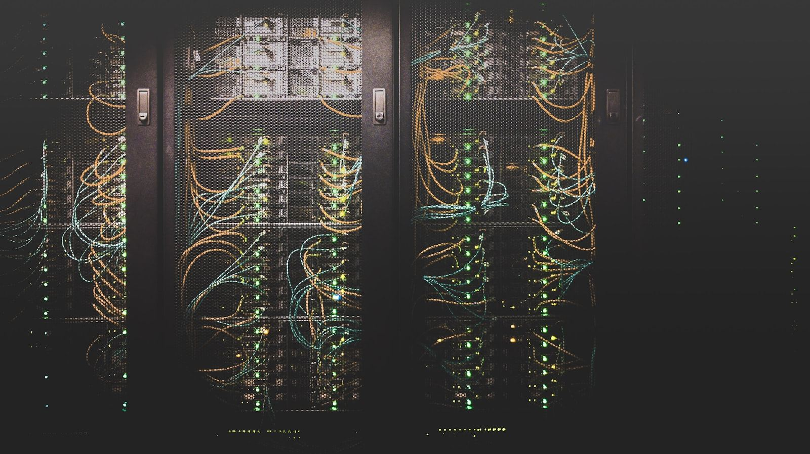

The complete embedded AI ecosystem
Fourteen open-source components — from bare-metal boot to on-device LLM inference. Deployed on millions of devices, governed by the foundation, free for any use.
EoS
Foundation real-time operating system. 33 HAL peripherals, 41 product profiles, deterministic scheduler, SMP/AMP.
Learn moreeos-platform
One toolchain, every EoS profile. Stable APIs, unified manifest, reproducible builds across all 14 components.
Learn more
eBootloader
Measured-launch chain of trust. Root-of-trust keys, signed manifests, anti-rollback, runtime attestation.
Learn moreeBuild
Reproducible builds across 14 components. Source → compile → link → sign → image, with SHA-256 hashes.
Learn more
EAI
On-device LLM and inference runtime. INT4 quantization runs 1.3B-param models at 11 tok/s on a Cortex-M85.
Learn more
ENI
1,024-channel deterministic spike-sorting pipeline. Filter, sort, decode, feedback in 800 µs frames.
Learn more
EIPC
Zero-copy message bus. RT-IPC across security domains with hardware MPU and ownership-transfer handshake.
Learn more
eApps
60+ embedded applications and the deployment framework that runs them on every EoS profile.
Learn more
EoSim
Virtual hardware-in-the-loop. Drive simulated EoS images from real PHYs, or real boards from simulated MMIO.
Learn moreEoStudio
Foundation IDE. Sidebar project tree, syntax-aware editor, integrated build/flash, on-device debugger.
Learn more
eDB
Page-level AES-XTS encryption with hardware-key offload. Fits in 6 KB of code on the smallest 64 KB MCU.
Learn moreeBowser
Embedded HTML5 browser engine. Tabs, address bar, JavaScript runtime — all at sub-1 MB binary footprint.
Learn moreeOffice
Office-document toolkit for embedded targets. View and edit docs and spreadsheets with embedded fonts.
Learn more
eServiceApps
Service rack: auth, MQTT, metrics, logger, OTA updates. Each runs as an isolated EoS task with a status badge.
Learn moreNo components match your filter. Reset →
How the components fit together
Build with the ecosystem
Every component is open-source under Apache 2.0. Use them in your products, contribute back, or join the foundation to help shape the roadmap.